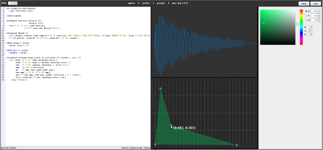
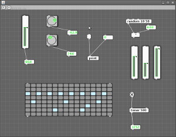

This post is about the inst branch of Overtone that I’m working on. The goal is to split up some of the functionality of the currenty synth and defsynth functions. Instead we will have a low-level synth interface, and a higher level instrument interface. Instruments are automatically added to the session when they are defined, and they will return back a player function. Calling an instrument function triggers the underlying synth.
-
synthdef
-
create raw synthdef object
-
synth
-
macro to let-bind operators to ugen functions
-
anonymous if no name symbol present
-
auto-load onto synth server
-
return callable map with sdef and trigger function
-
by default all synths play in the SYNTH-GROUP
-
defsynth
-
(def foo (synth …))
-
play
-
uses synth underneath, loads and triggers immediately when ready
-
inst (rument)
-
calls synth to define and load the synth
-
register itself with current session
-
creates a group to contain synth instance nodes
-
automatically adds pan and output ugens with existing rules
-
definst
-
(def foo (inst …))
; View a full sample waveform
(def s (load-sample "/home/rosejn/studio/samples/kit/boom.wav"))
(scope-buf s)
; view a live waveform
(def b (buffer 2048))
(defsynth foo [out-bus 20] (out out-bus (sin-osc 400)))
(foo) ; output a sine wave onto bus 20
(bus->buf 20 b) ; record signal from bus 20 into buffer b, looping
(scope-buf b)
(scope-on) ; enjoy
;...
(scope-off) ; stop live updates
We’ve made some big steps lately so I figured it was time for a short update. Fabian’s great work on the native bindings for the SuperCollider synthesis server now allow us to boot the audio server in the same process as the JVM. This means we can share buffers of audio data with the DSP engine with minimal communications overhead, allowing for real-time visualization and soon manipulation of audio waveform data.
The new (oscillo-)scope renders the contents of a buffer. It can animate in real-time with an adjustable fps, but their is no zooming or waveform manipulation yet. It’s already usable for checking out waveforms and learning, but hopefully there are still some good opportunities for optimizing this widget to get a bit cleaner, real-time waveform without jitter. (I haven’t tried out either the concurrent garbage collector or the real-time JVM, both of which could be interesting.)
; View a full sample waveform
(def s (load-sample "/home/rosejn/studio/samples/kit/boom.wav"))
(scope-buf s)
; view a live waveform
(def b (buffer 2048))
(defsynth foo [out-bus 20] (out out-bus (sin-osc 400)))
(foo) ; output a sine wave onto bus 20
(bus->buf 20 b) ; record signal from bus 20 into buffer b, looping
(scope-buf b)
(scope-on) ; enjoy
;...
(scope-off) ; stop live updates
Shown in the oscilloscope is a kick drum sample.

Below the oscilloscope is the new curve editor. This is the result of a late night hacking session last night, so there is plenty more work to do, but this will allow us to visualize and manipulate the control points for envelope and automation curves.
The color chooser in the toolbar on the side emits a :color-changed event when the color is changed. For most stuff you can probably just use the live-color function though. Here’s how you can change the color of the curve editor interactively:
(live-color #(curve-color %))
;... change color ...
(stop-color) ; remove the handler
I’ve been thinking about how to generate a little theme configuration panel that lets you see all of the colors used by the application, adjust them interactively, and then save out into a named theme setting. This will be one of the building blocks.
Our goal for this first draft of an actual Overtone application is to create a tool that is good for designing and playing a single instrument. This includes a basic live-coding editor, a repl, the oscilloscope, the curve editor, and a few generic controls to trigger synths and control parameters. Oh, and some basic midi hooks to make it easy to use a keyboard or a monome to trigger synths. We are probably a month or two away from the first alpha release.
Posted on 05 April 2010.
The audio synthesis API that communicates with SuperCollider is operational. You can define a synthesizer, load it and then trigger it and send it control messages to adjust parameters. Here’s a short example of creating and playing a simple synth on the repl.
(use 'overtone.live)
; import the UGen function library
; we do it this way because we need to override a bunch of built-in clojure
; functions, including +, -, *, / and other common functions. Doing it like
; this saves you from having to exclude all this in your namespace definition.
(refer-ugens)
; boot the synth server
(boot)
; here is a random, echoing, ping synth
(defsynth chop-saw [freq 440 depth 5]
(comb-n (* (env-gen (perc 0.1 0.4) (lf-pulse:kr 2))
(rlpf (saw (+ freq (* depth
(lf-saw:kr (lf-pulse:kr 0.1 0.2)))))
freq 0.6))))
; play it
(chop-saw)
; kill the synth instance based on the last returned node id
(kill *1)
; play it with different settings
(chop-saw 440 20)
; and control them on the fly
(chop-saw :ctl :freq 880 :depth 10)
; make some more
(chop-saw :freq 440)
(chop-saw :freq 220)
(chop-saw :freq 110)
; clear all running synths
(reset)
; quit the synth server
(quit)
A graph based editor (connecting nodes with edges) is coming to life now. This will allow you to define synthesizers and control patches in a basic graphical programming environment. Here’s a screenshot showing some of the widgets implemented in the first prototype (click to zoom):

Overtone can be used as a library from Clojure code or on the repl, but there is also the beginnings of a standalone application. It currently boots the server and it has a repl that can evaluate code, but it will soon get a text editor and the flow editor.
Posted on 20 February 2010.
Overtone lives!
(use 'overtone.sc)
(boot)
(hit (now) "kick")
(quit)

{kind=link}
{kind=link}